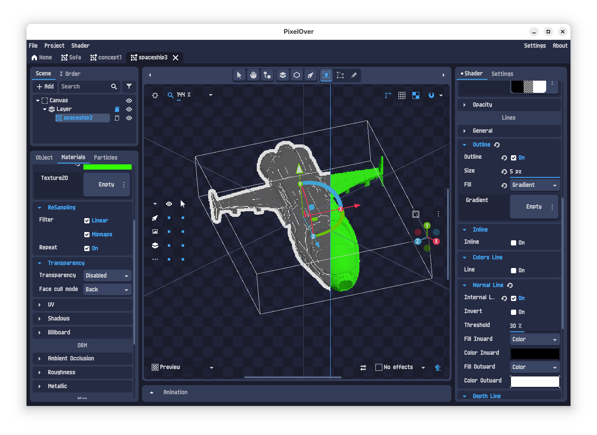

Manos’ Blog
Table of Contents
About
Here I write about things I usually figure out, such as pytorch development in nix, game development, or anything that piques my interest. If you want to discuss about something, reach me by email or github issues.
Refactoring and porting my Website repo to Nix with Claude
I am an Emacs user (although with VI bindings) and keep my notes in org-mode using Protesilaos’ denote. I love Org-mode. To my eyes it’s the best note taking system available in software form.
At some point, I got across a great video by SystemCrafters (also available as a post here) which showed how to create a website using Org-mode and org-html-publish-to-html (a function which creates html files from org files)
so I took some effort to port my then minimal html-only website to org-mode.
The Problem
The way my website works, and worked before, was that had a custom build.sh shell script together with a build-site.el which was based on the video by SystemCrafters.
This would read the contents in content/ and use org-html-publish-to-html to generate the html files under public. Then, I commited public to my github pages repo. This worked fine
but it had some big issues:
- The code used for building was not under version control.
- I had to manually call
build.shand thengit commitandgit pushevery time I wanted to make an update. - If I wanted to preview the changes, I would do it with
python -m http.servewhich works fine but requires a system-wide installed python. - If I wanted to make a change from another computer, I would need to copy the whole folder, make the changes, and then repeat the steps in 2.
Of course this was a bit bothersome to maintain and it kills motivation to write to a degree. To alleviate the issues above, I had already planned some changes which I never did:
- Move the published website to a different repo than
mainand keepmainfor the building code. - Use GITHUB actions to render the website, instead of having to call
build.shevery time. - Since I am using NixOS, create a reproducible environment which locked
emacsandpythonfor both rendering and previewing the website.
The reason for not fixing these was, I never found the motivation to work on those changes but since I recently got a personal Claude Code subscription to see what it’s all about I asked “why not?”.
Fixing Issues #1, and #2: Setting up a separate branch for publishing and continuous integration with github worfklows.
The first thing to do here, is to create a new branch gh-pages and set github pages to publish from there. See here. Then, you must add public/ to .gitignore to avoid commiting and pushing it manually (publishing will be done by github workflows from now on):
... # Build artifacts public/ ...
Then, add the following to .github/worfklows/deploy.yaml:
name: Build and Deploy Org Site
on:
push:
branches: [ main ]
workflow_dispatch: # Allow manual triggers
permissions:
contents: write
jobs:
build-deploy:
runs-on: ubuntu-latest
steps:
- name: Checkout source
uses: actions/checkout@v4
with:
fetch-depth: 0 # Full history for proper git operations
- name: Install Emacs
run: |
sudo apt-get update
sudo apt-get install -y emacs-nox
- name: Cache Emacs packages
uses: actions/cache@v3
with:
path: .packages
key: emacs-packages-${{ hashFiles('build-site.el') }}
restore-keys: emacs-packages-
- name: Build site
run: |
chmod +x build.sh
./build.sh
- name: Deploy to gh-pages
uses: peaceiris/actions-gh-pages@v3
with:
github_token: ${{ secrets.GITHUB_TOKEN }}
publish_dir: ./public
force_orphan: true # Keep gh-pages clean
user_name: 'github-actions[bot]'
user_email: 'github-actions[bot]@users.noreply.github.com'
commit_message: 'build: deploy site from ${{ github.sha }}'
Commit and push your changes to main now which properly tracks your code. Now every time you commit and push a change (e.g. in content/blog.org) it will be
picked up by github actions and after a while you will have your website ready at your github-pages appointed url.
Fixing Issues #3, and #4: Setting up a Nix Development Environment
The first thing I asked Claude Code to do was (after initializing in the repo with init) was to create the flake.nix file. Creating nix environments is my goto litmus test
for AI assistants since I’ve found they tend to fail on these a lot. It passed the test after a while, with some caveats, (I will make a post on the cases where ClaudeCode~+~Sonnet combination still fails) creating
two targets build and serve, which you can call with nix run .#<target> and do what you would expect.
{
description = "Simple Org-mode Website";
outputs = { self, nixpkgs, flake-utils }:
flake-utils.lib.eachDefaultSystem (system:
{
# Emacs with htmlize which is needed for rendering org mode files
emacs-with-packages = ...;
# The website as a derivation
buildSite = pkgs.stdenv.mkDerivation { ... };
# The serving script
serveScript = pkgs.writeShellScriptBin ...;
#
devShells.default = ...;
# Build the website to ./result
packages.default = ...;
# Convenient apps
apps = {
serve = ...; # Build and serve locally
};
}
);
}
Now I could simply run:
nix develop # Enter dev environment nix run .#serve # Build and test locally nix build # Build for deployment
With this, I solved issues 3, and 4 above.
Minor enhancements with Claude Code
Having fixed the issues that related to building and deploying the website, I turned my attention to some other isses and enhancements I had in mind:
- Setting up a nicer theme
I am quite fond of Deus Ex: Human Revolution. It is one of my favourite games of all times. So, when I saw that someone made a collection of themes based around its cyber-rennaisance colorscheme, I had to add it everywhere, including my website. This was very easy, I just pointed Claude to Jensen’s README.md file, and it did the rest. While I was at it, I replaced the hovering menu on the right with a top bar, set some nice transparencies and added a cyber-rennaisancy background I quickly made in blender to better match the theme.
- Cache-Busting for Static Assets
One minor, but annoying issue I had was browser caching - visitors would see old CSS/JS even after updates. Claude implemented cache-busting by adding timestamps to asset URLs:
;; Generate timestamp-based version (defvar cache-buster (format-time-string "%Y%m%d%H%M%S")) (setq org-html-head (concat "<link rel=\"stylesheet\" href=\"static/style.css?v=" cache-buster "\" />"))
Every build generates a new timestamp, forcing browsers to load fresh assets.
{kind=link}
The Workflow Now
My current workflow is beautifully simple:
# 1. Edit content emacs content/blog.org # 2. Test locally nix run .#serve # 3. Commit and push git add content/blog.org git commit -m "feat: add new blog post" git push # GitHub Actions deploys automatically!
Using This Setup Yourself
If you want to build your website the same way on github pages, just fork my repo on github, change the content, and follow the README.
Run Godot made games/apps on NixOS
Trying to run games (or apps) made in Godot in Nixos will result in (in this example Pixelover):
mmxgn@emerdesktop ~/Downloads/pixelover-linux-demo $ ./PixelOver.x86_64 Could not start dynamically linked executable: ./PixelOver.x86_64 NixOS cannot run dynamically linked executables intended for generic linux environments out of the box. For more information, see: https://nix.dev/permalink/stub-ld
The correct nix approach would be to create a derivation with all the necessary dependencies and patchelf the binaries. However noone has time for that. Here’s a solution that has served me well:
environment.systemPackages = with pkgs; [
(let base = pkgs.appimageTools.defaultFhsEnvArgs; in
pkgs.buildFHSEnv(base // {
name = "fhs";
targetPkgs = pkgs:
(base.targetPkgs pkgs) ++ (with pkgs; [
pkg-config
ncurses
zsh
mesa
libglvnd
wayland
wayland-protocols
glfw
]
);
LD_LIBRARY_PATH = with pkgs; lib.makeLibraryPath [
mesa
libglvn
];
profile = "export FHS=1";
runScript = "zsh";
extraOutputsToInstall = ["dev"];
}))
];
Then by running fhs first, you can simply execute the binary as you would under an FHS-compliant distribution:
mmxgn@emerdesktop ~/Downloads/pixelover-linux-demo $ fhs mmxgn@emerdesktop ~/Downloads/pixelover-linux-demo $ ./PixelOver.x86_64

Figure 1: Pixelover is a great app for converting your 3d models to 2d sprites (spaceship model by yours truly).
How I work with CUDA and devenv for developing with python/pytorch in NixOS
Disclaimer
What I write applies to the following:
- Date: Jan 30, 2025
- NixOS version
25.05(unstable) - Nixpkgs channel
github:nixos/nixpkgs/nixos-unstable - Nvidia Drivers / CUDA Version:
565.77/12.7
Your mileage may vary, especially if visiting this article in the future.
The problem
Machine learning with python was one of my big pain with NixOS that occasionally brought me close to abandoning it. There is no single way to make things work and if not using python from nixpkgs it is almost guaranteed to break (e.g. during compilation of numpy or something similar). Furthermore, trying different ways requires writing lots of boilerplate code which can be hard to convince your colleagues to add to the git repo. I have figured two ways to keep my sanity: by using docker and by using devenv. Here I write about the latter while I might write about the former in the future:
devenv to the rescue
I recently came across devenv which looks promising as an easy way to let me collaborate with colleagues on ml-based python projects while still using NixOS on my local environment and not having to fight through docker shenanigans (fixing for permissions, working with git repositories, and stuff). It is easy, first include it with:
environment.systemPackages = [ pkgs.devenv ];
Then, after rebuilding from configuration.nix, switch to your repository on your disk and run:
# Initialise a devenv package devenv init
And use the following devenv.nix, and devenv.yaml file (remember to change the python version and requirements.txt file):
{ pkgs, lib, config, inputs, ... }:
{
# Required for compiling numpy
packages = [ pkgs.libz ];
languages.python = {
enable = true;
version = "3.10";
venv.enable = true;
venv.requirements = ./requirements.txt;
};
# This is required if you want your module to see cuda
env.LD_LIBRARY_PATH = "/run/opengl-driver/lib";
}
inputs:
nixpkgs-python:
url: github:cachix/nixpkgs-python
inputs:
nixpkgs:
follows: nixpkgs
nixpkgs:
url: github:cachix/devenv-nixpkgs/rolling
numpy torch torchaudio torchvision
So, finally, after devenv shell:
python -c 'import torch; print(torch.cuda.is_available())'
True
Devenv will also modify your .gitignore file to include itself, don’t forget to stage it with git stage .gitignore.
diff --git a/.gitignore b/.gitignore index 51aa465..7fd8971 100644 --- a/.gitignore +++ b/.gitignore @@ -33,3 +33,12 @@ build/* **/checkpoint* **/output**.wav **/*.ipynb +# Devenv +.devenv* +devenv.local.nix + +# direnv +.direnv + +# pre-commit +.pre-commit-config.yaml
Troubleshoot
- Importing
modulefails withImportError: libXXX.so.X: cannot open shared object file: No such file or directory
If you get an error like:
>>> import numpy Traceback (most recent call last): File "<your-path>/.devenv/state/venv/lib/python3.10/site-packages/numpy/_core/__init__.py", line 23, in <module> from . import multiarray File "<your-path>/.devenv/state/venv/lib/python3.10/site-packages/numpy/_core/multiarray.py", line 10, in <module> from . import overrides File "<your-path>/.devenv/state/venv/lib/python3.10/site-packages/numpy/_core/overrides.py", line 7, in <module> from numpy._core._multiarray_umath import ( ImportError: libz.so.1: cannot open shared object file: No such file or directory During handling of the above exception, another exception occurred: Traceback (most recent call last): File "<your-path>/.devenv/state/venv/lib/python3.10/site-packages/numpy/__init__.py", line 114, in <module> from numpy.__config__ import show_config File "<your-path>/.devenv/state/venv/lib/python3.10/site-packages/numpy/__config__.py", line 4, in <module> from numpy._core._multiarray_umath import ( File "<your-path>/.devenv/state/venv/lib/python3.10/site-packages/numpy/_core/__init__.py", line 49, in <module> raise ImportError(msg) ImportError: IMPORTANT: PLEASE READ THIS FOR ADVICE ON HOW TO SOLVE THIS ISSUE! Importing the numpy C-extensions failed. This error can happen for many reasons, often due to issues with your setup or how NumPy was installed. We have compiled some common reasons and troubleshooting tips at: https://numpy.org/devdocs/user/troubleshooting-importerror.html Please note and check the following: * The Python version is: Python3.10 from "<your-path>/.devenv/state/venv/bin/python" * The NumPy version is: "2.2.2" and make sure that they are the versions you expect. Please carefully study the documentation linked above for further help. Original error was: libz.so.1: cannot open shared object file: No such file or directory The above exception was the direct cause of the following exception: Traceback (most recent call last): File "<stdin>", line 1, in <module> File "<your-path>/.devenv/state/venv/lib/python3.10/site-packages/numpy/__init__.py", line 119, in <module> raise ImportError(msg) from e ImportError: Error importing numpy: you should not try to import numpy from its source directory; please exit the numpy source tree, and relaunch your python interpreter from there. >>>The solution is to add the corresponding
pkgs.<library>indevenv.nix. If you don’t know what that is, you can figure it out with nix-locate:E.g.:
# First create the index nix-index # Then find the corresponding package nix-locate 'libz.so.1'
... zlib.out 0 s /nix/store/jb442jir0a2x7zsk0d63xb6rh8p280ai-zlib-1.3.1/lib/libz.so.1 zlib.out 128,584 x /nix/store/jb442jir0a2x7zsk0d63xb6rh8p280ai-zlib-1.3.1/lib/libz.so.1.3.1 ... libz.out 0 s /nix/store/x4hgdkl1i7x76phgkqv24m70jawqa7jm-libz-1.2.8.2015.12.26-unstable-2018-03-31/lib/libz.so.1 libz.out 107,680 r /nix/store/x4hgdkl1i7x76phgkqv24m70jawqa7jm-libz-1.2.8.2015.12.26-unstable-2018-03-31/lib/libz.so.1.2.8 ...
And now you can add
pkgs.libztodevenv.nix:... packages = [ pkgs.libz ]; ...
Another usual suspect is
cv2which requirespkgs.libGLandpkgs.glib.